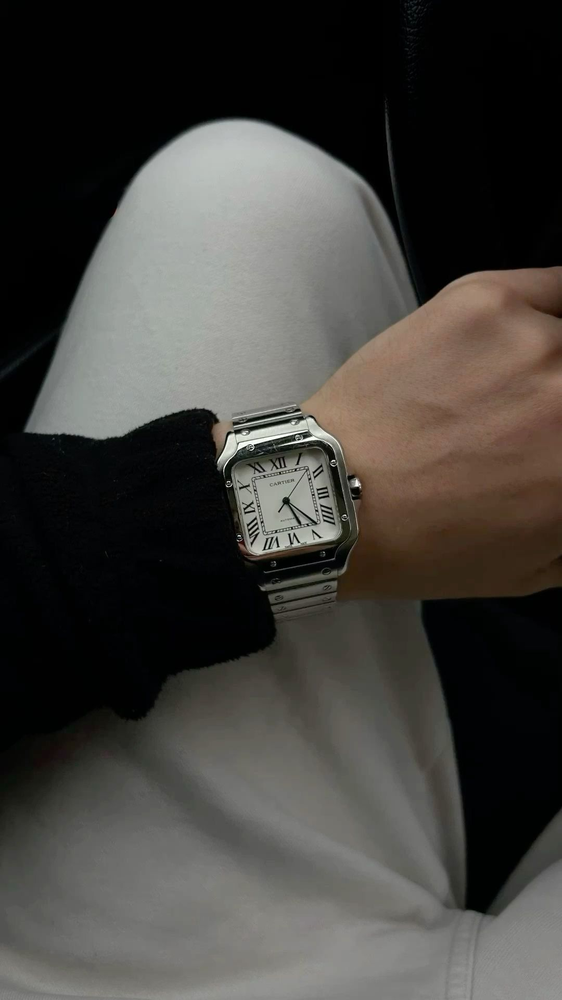
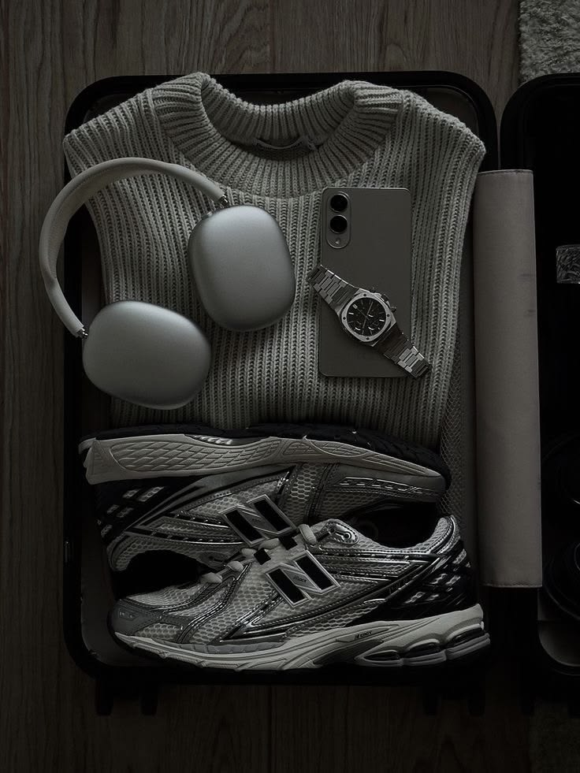
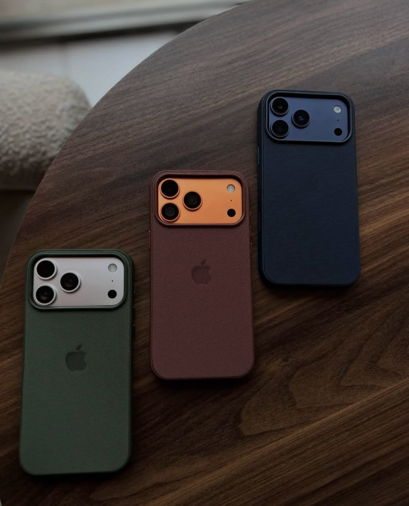
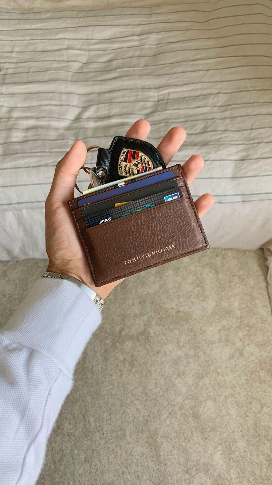
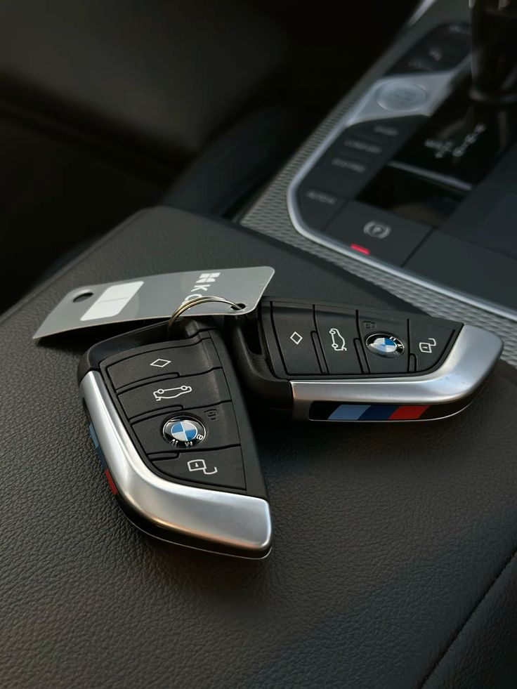
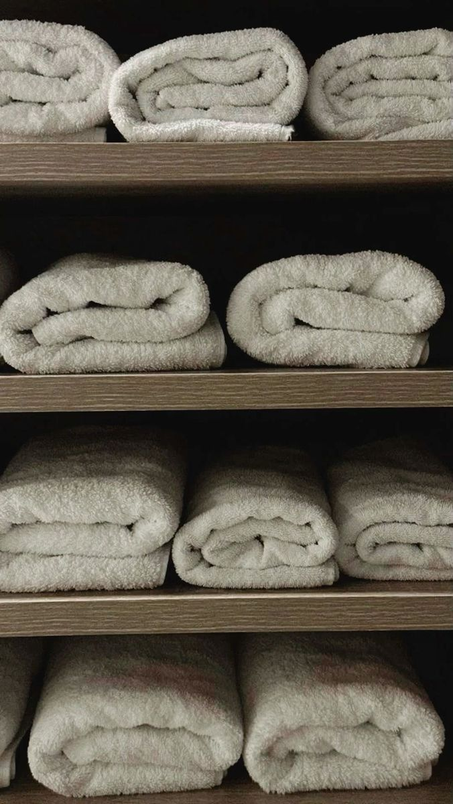
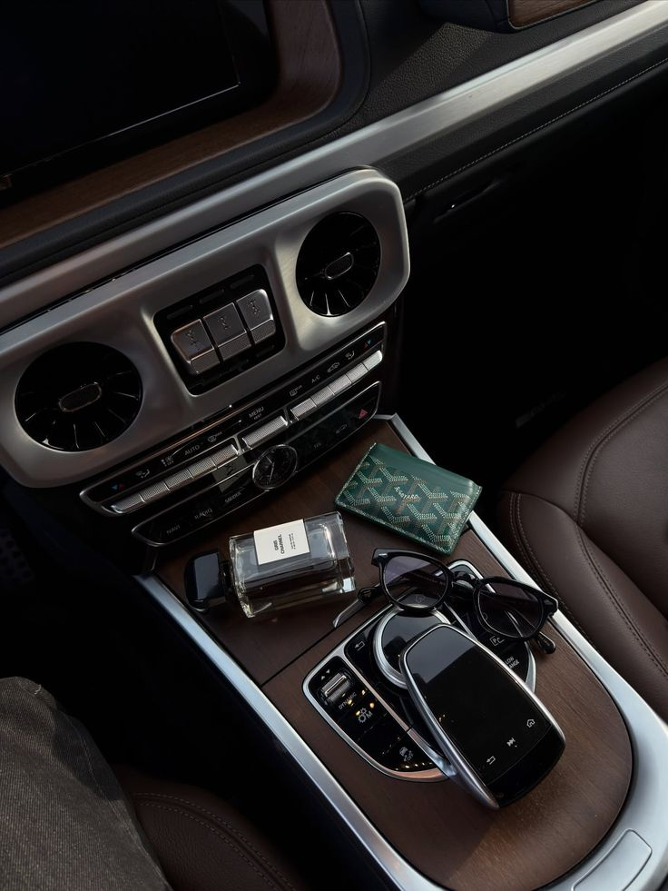

Wrist
Daily watch
One clean watch people remember. LifeScore lane: Cartier Santos.

A man needs his daily objects handled. Phone, wallet, watch, keys, glasses, documents. Fewer things, better chosen.
Wear luxury quietly. Fit, cleanliness, posture, and restraint beat loud logos.
Small objects people see before they hear your story.

One clean watch people remember. LifeScore lane: Cartier Santos.


Cards, ID, one backup bill. No receipt pile, no bulky wallet print.

Keep the car key lean. Remove old tags, dead fobs, and clutter.

Glasses, phone, watch, laptop. Clean surfaces make everything sharper.

Water, wipes, gum, sanitizer, charger, and a small atomizer.

Learn the levels before spending. A clean $400 watch worn well beats a loud expensive watch worn badly.
Reliable first watches for learning what you actually wear.
Lane: daily learner.Better finishing and movements without heavy spending.
Lane: clean upgrade.Stronger heritage, finishing, and brand recognition.
Lane: serious daily or dress watch.Status plus quality. Buy slowly and know why it fits your life.
Lane: signature piece.Collector territory with more craft, scarcity, and complexity.
Lane: collection, not first watch.